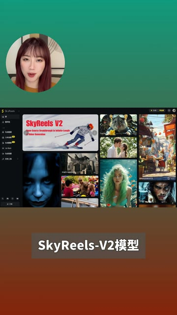
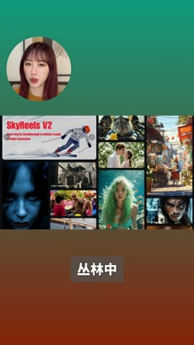
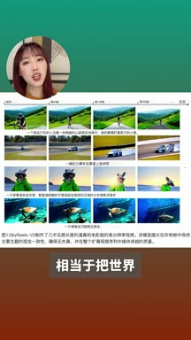
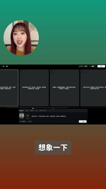
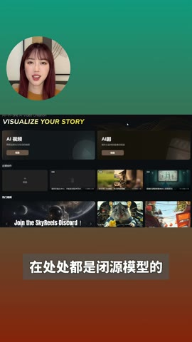
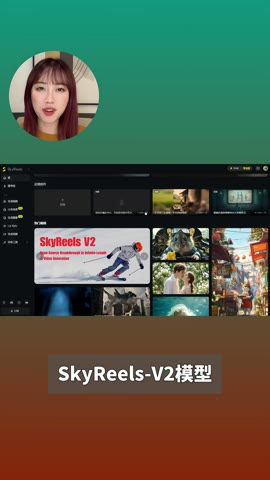
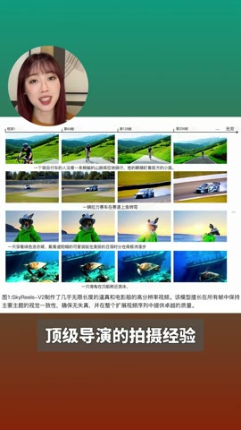
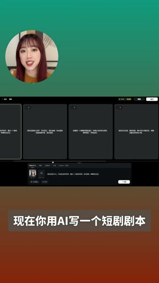

01钩子 / 问题
把新品定义成时长突破
开场宣布昆仑万维开源 SkyReels V2，并把它与常见五到十秒拼接短片对比，强调更长的高清视频生成、免费开源和在线体验。
SkyReels V2 试图把 AI 视频从五到十秒片段推进到更长、更连续的生成流程，开源和在线体验降低了普通创作者的进入门槛。
视频把新品发布包装成行业规则变化：先宣布突破时长，再用多个样片证明连续性和镜头感，最后把能力扩展到短剧生产。不过“无限时长”和训练数据等表述需要外部来源核验。
SkyReels V2 试图把 AI 视频从五到十秒片段推进到更长、更连续的生成流程，开源和在线体验降低了普通创作者的进入门槛。
不是复述内容，而是标出每一段承担的叙事任务、观众问题和画面证据。
开场宣布昆仑万维开源 SkyReels V2，并把它与常见五到十秒拼接短片对比，强调更长的高清视频生成、免费开源和在线体验。
她展示自己生成的完整短片，并强调画面连续、流畅和不易扭曲；随后展示三十秒一镜到底以及航拍、水拍等运动镜头。
第二组乡村怀旧样片用于证明氛围与风格控制，随后以训练素材规模解释模型为何能处理镜头语言。
视频设想先用 AI 写短剧剧本，再用模型生产完整短剧，把单次生成能力扩展成内容生产流程。这里是未来应用推演，不是当前生产稳定性的证明。
结尾鼓励观众趁免费开源阶段尝试，并判断内容行业的规则将被 AI 改写。
下列章节覆盖视频的主要论点、步骤与结果；每段都保留时间码和关键画面。
开场宣布昆仑万维开源 SkyReels V2，并把它与常见五到十秒拼接短片对比，强调更长的高清视频生成、免费开源和在线体验。
她展示自己生成的完整短片，并强调画面连续、流畅和不易扭曲；随后展示三十秒一镜到底以及航拍、水拍等运动镜头。

第二组乡村怀旧样片用于证明氛围与风格控制，随后以训练素材规模解释模型为何能处理镜头语言。
视频设想先用 AI 写短剧剧本，再用模型生产完整短剧，把单次生成能力扩展成内容生产流程。这里是未来应用推演，不是当前生产稳定性的证明。
结尾鼓励观众趁免费开源阶段尝试，并判断内容行业的规则将被 AI 改写。
短视频每 1 秒、常规视频每 2 秒、超长视频每 3 秒取一帧。



小红书官方 zh-CN 字幕 · 24 段 · 585 字。字幕只记录声音；工具名、界面文字和结果含义必须结合上方视觉知识地图复核。
这两天ai圈又出大事儿了，昆仑万维开源了
全球首个支持无线时长的高质量电影大模型
Skyrise v二它
暴力突破了现有的ai视频时长，不是生成五秒或者十秒的拼接小短片

而是可以无限时长的生成高清视频，在处处都是边缘模型的丛林中
它直接免费开源，还推出了免部署的在线体验版，这无疑是影视圈的狂欢
也是普通小白临阵起步的创作红利，彻底告别了高门槛的拍摄成本
你们看我刚刚生成的这段，由于突破了时长限制，它不再是零散的片段
而是有连续剧情的完整短片，不卡顿不扭曲，流畅度和画质也非常出色
一镜到底的三十秒长镜头是它的独家功能，且持续无限延长
无论是航拍水拍都能一气呵成
再试试最近这种很火的乡村怀旧视频，也能处理的氛围感极高

如此强大的scarios v二模型背后
是通过六百二十万小时电影素材训练出来的，什么概念呢？

相当于把世界顶级导演的拍摄经验和镜头语言
全部装进了一个模型里，任由你来操控，所以它才能真正的理解我们的需求
不管是处理运境人物表情还是意味深长的镜头语言
都非常出色，这哪里是ai，这简直就是一个资深电影大师在背后为你服务

给你吐素材。想象一下，你现在用ai写一个短剧剧本
再用这样的ai就能制作一部完整的短剧，然后说不定你就能混进娱乐圈了
不得不说scarios的出现可能彻底改变视频创作的流程
趁现在它还属于免费开源的阶段，我强烈建议你们赶紧去试试
因为整个内容创作行业的游戏规则
都会被ai彻底改写
公开视频能证明作者展示了哪些样片和主张，不能独立证明“无限时长”、训练数据授权、硬件门槛、生成成功率或生产级稳定性。
打开小红书原帖 ↗